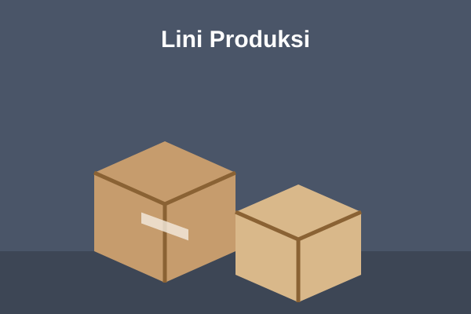

Tentang Perusahaan
International Packaging Manufacturing adalah pabrik kemasan yang berlokasi di Kawasan Industri Cikande, Serang. Kami melayani produsen makanan, minuman, kosmetik, farmasi, hingga toko online yang membutuhkan kemasan aman, rapi, dan tampil menarik.
Dari desain struktur, cetak, sampai pengiriman, seluruh proses dikerjakan di satu lokasi sehingga mutu dan waktu produksi lebih terkendali.

Perusahaan dalam Angka
2008tahun berdiri
350+karyawan
120 jutaunit kemasan per tahun
500+klien aktif
Mengapa Memilih Kami
Mutu Terjamin
Setiap batch melewati pemeriksaan kekuatan, ukuran, dan kualitas cetak.
Bahan Ramah Lingkungan
Tersedia pilihan karton daur ulang dan bahan bersertifikat FSC.
Pengiriman Tepat Waktu
Armada dan gudang sendiri memudahkan pengiriman ke seluruh Indonesia.